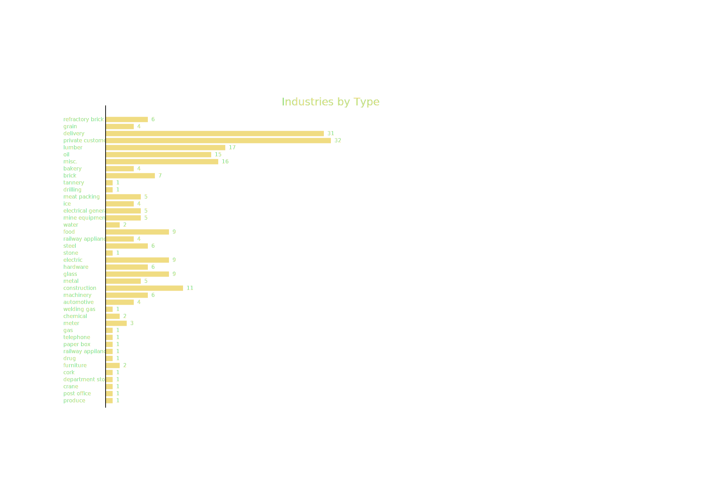

Industries by Type on the Pittsburgh Division:
Coal has been exclueded from this graph. Due to its immense presence, with 205 industries, the data would exceed the screen width by a massive amount.

This graph provides a breakdown by type of the various industries served by the Pennsylvania Railroad.
Coal was the most abundant and valuable resource in Southwestern Pennsylvania, but other commodities were handled. Where research proved inconclusive, customers were assigned with a "misc." tag.